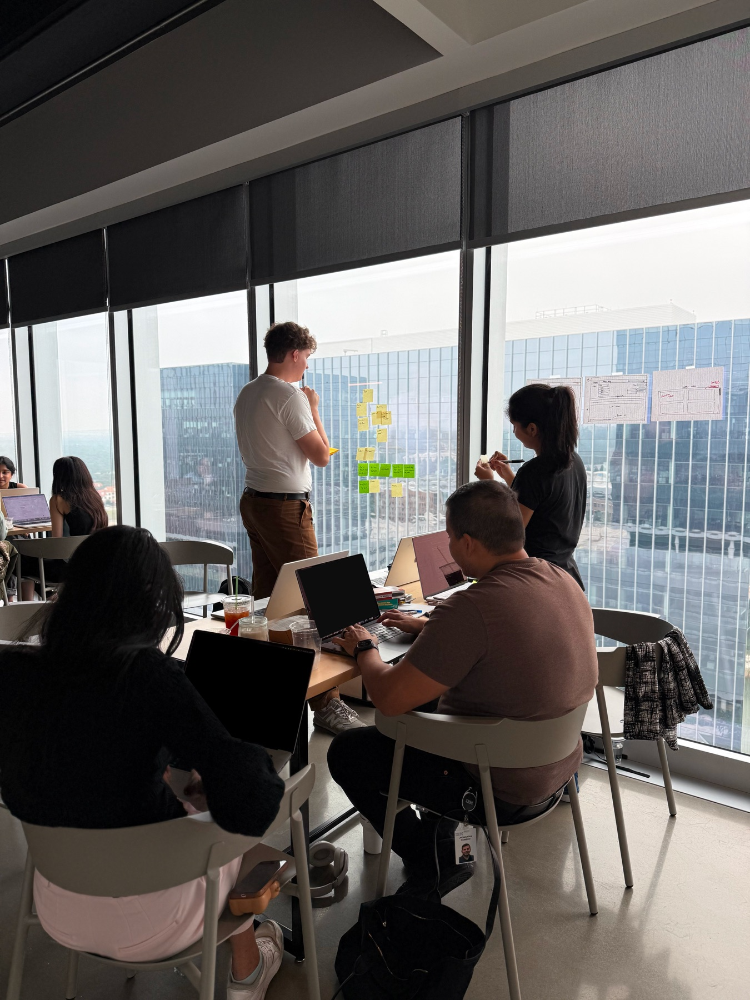

IBM · Austin, TX · Summer 2026
Designing inside something that already exists.
Twelve weeks. One product I didn't start. A lot of unlearning.
Before we start
Most of what I worked on is internal and under NDA, so this page has almost no screenshots. I thought about padding it with vague mockups and abstract "system diagrams" that don't mean anything.
I'd rather just tell you what I learned and let you decide whether I'm worth a conversation. If you want to see specifics, ask me in an interview — there's plenty I can walk through live.
The genuinely useful thing about an internship isn't the artifact. It's finding out which of your instincts survive contact with a real org. Mine did not all survive.
What school didn't cover
At SCAD, the hard part is figuring out what to build. At IBM, the hard part was figuring out what already existed and why.
-
01
The component library is a design constraint, not a shortcut.
My first week I designed a flow I was proud of. It used a pattern our system didn't have and couldn't cheaply get. The critique wasn't "this is bad" — it was "who's building this?" I didn't have an answer. Now I check what exists before I open a blank frame, every time.
-
02
Somebody already made this decision, and they weren't stupid.
Every weird thing in a mature product is a fossil of a real constraint — a customer contract, a migration, a regulation, an engineer who got overruled in 2019. I got a lot further asking "why is it like this" than proposing what it should be instead.
-
03
Enterprise users are experts. Don't design for confusion they don't have.
I kept simplifying things that didn't need simplifying. These people use this tool eight hours a day; they want density, keyboard paths, and predictability far more than they want gentle onboarding. Friendly is not the same thing as good.
-
04
Handoff is design work, not paperwork.
The spec is where the design actually gets decided. Every state I didn't document became somebody else's guess. I started writing the edge cases before the happy path, which felt backwards and worked better.
-
05
You will not get to finish.
I left with things half-shipped and a doc explaining where I got to. That was uncomfortable and it's also just what the job is. Leaving good notes is a design skill.
One thing I can actually describe
The problem: a configuration step people were reliably getting wrong, then filing support tickets about. The obvious read was "the UI is confusing."
What was actually happening: people weren't confused about the interface. They were confused about which of two nearly-identical concepts they were configuring, because the two things had been named by different teams, years apart, and both names were technically correct.
What I proposed: almost no layout change. New labels, a one-line explanation of the difference at the decision point, and a confirmation that restated the choice in the user's own terms rather than the system's.
What I learned: the version that tested best was the one that added words. I'd spent two years assuming the answer was always fewer.
I wanted so badly to redesign the screen. The screen was fine. It's a humbling thing to discover your best contribution was a naming argument.
The part that wasn't design
I moved to Austin knowing nobody. I ate lunch alone for about a week and then figured out that the fastest way into a team is to ask people what they're working on and mean it.
By the end I was the person who'd ask the dumb clarifying question in the big meeting, which it turns out several other people also wanted asked. That's a role. I'd take it again.

What I'd do differently
Ask about constraints in week one instead of week three. Write things down sooner. And spend less time making the deck good and more time making the argument good — the two are not the same and I optimized the wrong one at least twice.
I went in wanting to prove I could design. I came out realizing the harder skill is designing something other people can actually build.